今日趋势
544道基础题，检查的是模型能否稳定答对，以及换一点问法之后会不会失手。DeepMind的新评测给日常可靠性留出了一个独立位置：复杂题的上限很高，读一格颜色、认一个位置却仍可能出错，这两种表现可以同时存在。
实验室和望远镜的数据又有各自的证据等级。GPT-6.2设计的小蛋白经过专门模型筛选，在322个实验样本中测到35个结合信号；爱好者借助Codex与Astra提出了行星候选，专业人员还在复核。前者没有证明疗效，后者还没有确认新行星；它们的进展已经足够具体，保留下一步，故事也成立。
其余变化落在日常成本上：模型转换减小文件，工具补丁补回参数与费用记录，企业试图整理已有经验或调度数据任务。下载大小、主机内存、推理速度和最终交付质量，各有自己的计算方法。这一期把这些数字放回原来的条件里。
Google官方公告
Gemini接入勇士与女武神球队运营
来源: Google官方公告 · 2026-11-25 · 原文链接
Google于24日宣布扩大与金州体育组织的合作，Gemini成为勇士、金州女武神与大通中心的官方AI助手及生成式AI和企业大模型合作伙伴。合作包括场内视频屏互动、球迷数字渠道，以及通过Gemini for business为商业和篮球运营建立定制代理。Google自2019年起已是大通中心创始合作伙伴，这次是扩展合作，并非双方首次合作。公告没有公布合同金额、球迷功能的统一上线日期或运营效率测量结果。
Janet 锐评：
比赛看台上的互动最容易被拍成宣传片，后台代理究竟替谁少做了一遍表格，则要到球队日常工作里寻找答案。这次签约确认了合作范围，还没有给出一个可以独立核对的效率成绩。
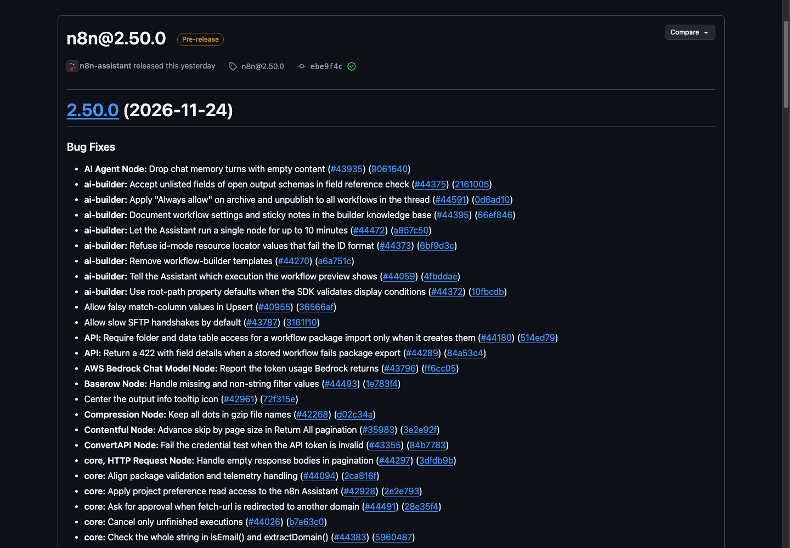
n8n官方GitHub Release（预览版）
n8n预览版加入技能来源与批量确认
来源: n8n官方GitHub Release（预览版） · 2026-11-25 · 原文链接
n8n于24日发布2.50.0预览版，版本记录标记为prerelease。它为Assistant和MCP增加技能来源，支持在代理输入框中引用对象，并允许一批数据表变更集中询问确认。工作流构建校验会结合实际保存的执行引擎，版本也增加代理执行指标和持久化调用支持。这里介绍的是预览通道能力，不将其写成全部稳定版用户已获得的功能；批量确认仍是一项授权步骤，不能理解成代理获得无限制修改权。
Janet 锐评：
一张表改十处，十次打断会消磨耐心；合并成一次确认确实更顺手。问题随之变成：这一批究竟包括哪十处。预览展示得清楚，点击同意才有具体含义，单纯减少弹窗数量并不能替代它。
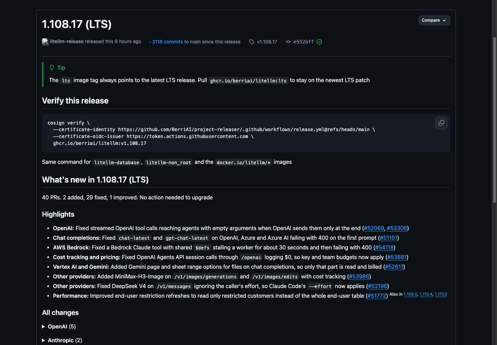
LiteLLM官方GitHub Release（LTS）
LiteLLM修复流式工具调用空参数
来源: LiteLLM官方GitHub Release（LTS） · 2026-11-25 · 原文链接
LiteLLM于24日发布1.108.17长期支持补丁，修复OpenAI只在流结束时发送参数、代理却收到空参数的工具调用问题，也修正OpenAI Agents API会话经/openai转发时记录零美元、导致预算控制失效的计费记录。该版另处理Bedrock共享定义工具卡住约30秒后返回400等兼容问题。以上来自LTS版本说明，不混入同日1.112.0候选版功能；记录到正确费用不等于服务价格下降。
Janet 锐评：
工具名没错、参数却是空的，代理很容易背上“不会做事”的锅。这个补丁说明，错误也可能出在流式转发的最后一段。预算看似没有消耗时，同样值得回头核对记录链路。
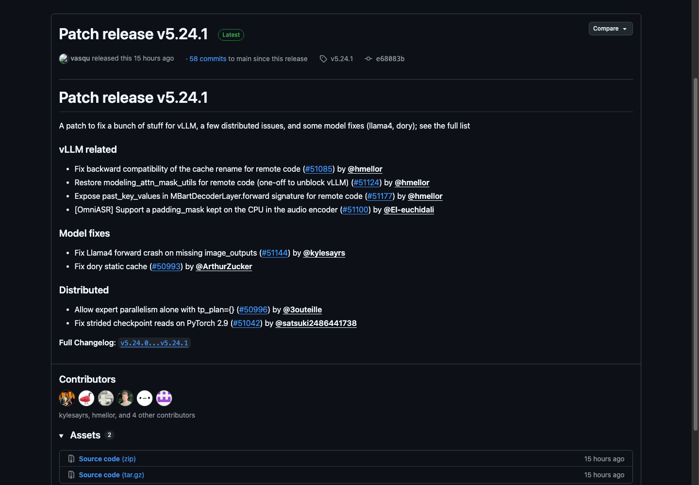
Hugging Face官方GitHub Release
Transformers补丁修复推理兼容问题
来源: Hugging Face官方GitHub Release · 2026-11-25 · 原文链接
Hugging Face于24日发布Transformers 5.24.1补丁，恢复远程模型代码所需的注意力掩码工具，处理缓存重命名的向后兼容，并为vLLM相关调用补充接口参数。模型侧修复Llama4缺少图像输出时的前向计算崩溃和dory静态缓存问题；分布式侧处理PyTorch 2.9检查点的跨步读取。它是兼容性和缺陷修正，没有发布新的基础模型，也没有在说明中给出通用推理加速比例。
Janet 锐评：
同一份权重昨天能跑、今天导入失败，排查往往要穿过好几个库。恢复一个旧接口看起来不壮观，却能让现有服务少绕一圈；发布说明把受影响的位置列出来，比一句全面提速更实用。
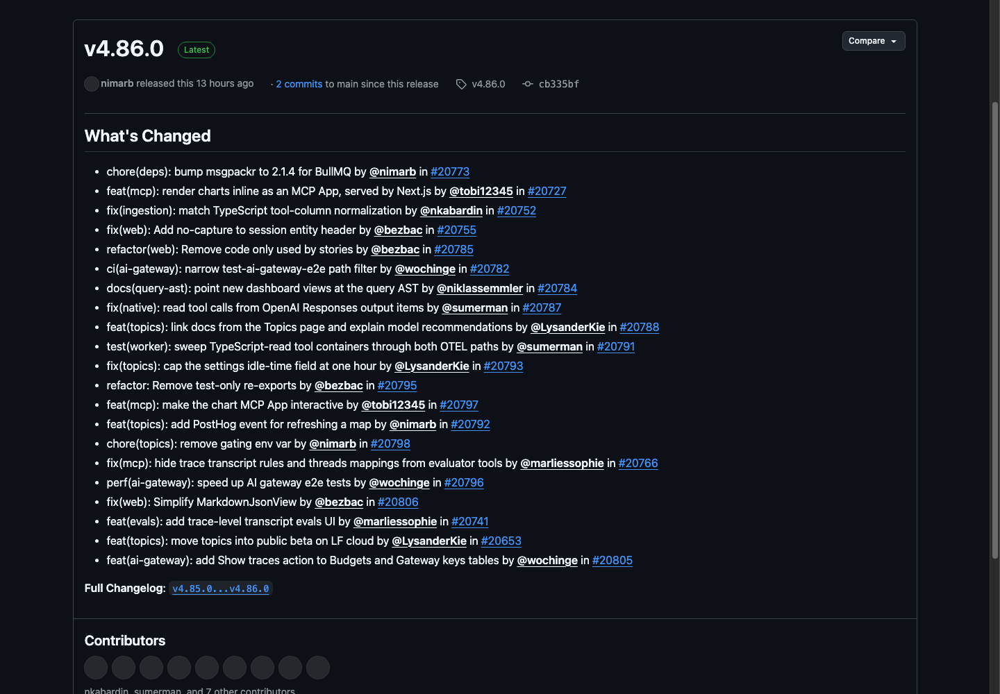
Langfuse官方GitHub Release
Langfuse支持对话内交互图表
来源: Langfuse官方GitHub Release · 2026-11-25 · 原文链接
Langfuse于24日发布4.86.0，将图表作为MCP App在对话内呈现并加入交互能力，提供trace级对话转录评估界面，Topics进入云服务公开测试。修复项包括从OpenAI Responses输出项中读取工具调用，以及限制Topics设置中的空闲时间字段不超过一小时。版本说明确认的是功能与解析变化，没有证明任何模型因此更准确；公开测试与所有自托管环境的默认配置也不能直接画等号。
Janet 锐评：
看到曲线之后还能继续点开检查，比在聊天里贴一张静态图多了一层用途。不过，图表的交互再方便，底下是否漏读了一次工具调用，仍会影响解释；这份更新里两件事恰好都要紧。
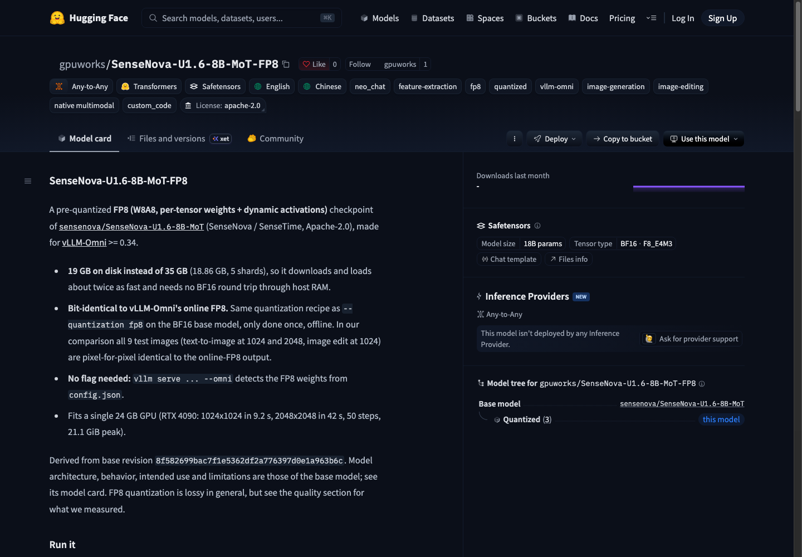
GPUWorks模型卡与权重记录（独立转换，作者自报）
SenseNova新增第三方FP8转换版
来源: GPUWorks模型卡与权重记录（独立转换，作者自报） · 2026-11-25 · 原文链接
GPUWorks于24日新增SenseNova-U1.6-8B-MoT的独立FP8转换，权重提交时间为16:19 UTC；它不是商汤当天发布的新基础模型。作者自报，权重磁盘体积由35.07GB降至18.86GB；在RTX 4090、vLLM-Omni 0.34.0、50步和单并发下，1024像素图像约9.2秒，速度与在线FP8基本相同。九张同提示和种子的图与在线FP8逐像素一致，但作者没有比较BF16输出，不能据此宣称量化无损；Ampere显卡也尚未实测。
Janet 锐评：
这份转换最坦诚的一行，是速度没有变。省下来的主要是下载、磁盘和加载时的主机内存，恰好都是部署者会真付钱的地方。九张图一致的比较对象是另一条FP8路径，离“和原始BF16毫无差别”还隔着一次实验。把这点说透，成绩反而更容易判断，也让24GB显卡用户知道自己拿到的究竟是什么。
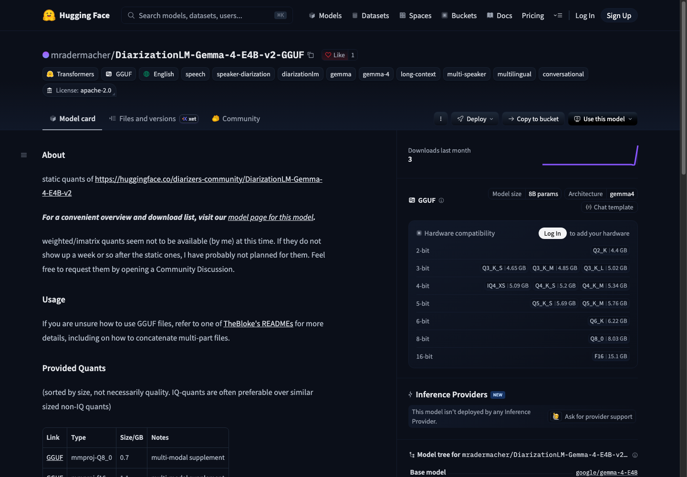
mradermacher转换记录与diarizers-community原模型卡
说话人纠错模型新增独立GGUF转换
来源: mradermacher转换记录与diarizers-community原模型卡 · 2026-11-25 · 原文链接
mradermacher于24日新增DiarizationLM-Gemma-4-E4B-v2的GGUF转换分发，Q4_K_M文件约5.34GB，运行时内存需另算。它源于diarizers-community基于Gemma 4 E4B的独立微调，用于对已有语音识别文本与说话人标签进行后处理，不是直接听音频的新ASR模型，也不是Google官方产品。原模型加入合成的非英语训练数据，且较早已提供自己的GGUF文件；本次新增的是另一套转换，并无对应量化版本的新独立效果测试。
Janet 锐评：
会议纪要里一句话归错了人，文字本身再流畅也可能惹麻烦。这个模型处理的就是转录之后的归属问题；它仍依赖前端给出的材料，五个多GB的下载也不会自动把含糊录音变成可靠证词。
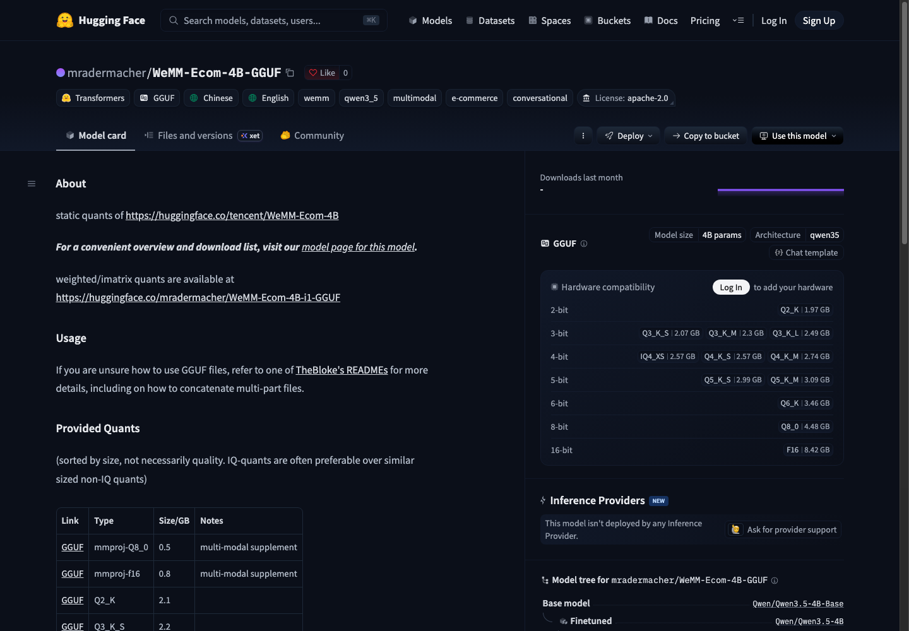
mradermacher转换记录与腾讯原模型卡
WeMM电商模型加入独立量化下载
来源: mradermacher转换记录与腾讯原模型卡 · 2026-11-25 · 原文链接
mradermacher于24日为腾讯WeMM-Ecom-4B提供独立GGUF转换，Q4_K_M语言权重约2.74GB，视觉使用还需投影文件与兼容运行时。基础模型较早已公开，基于Qwen3.5-4B，面向商品属性、审核、OCR、检索等电商理解任务。腾讯原模型自报，在28项电商评测上的平均分高于Qwen3.5-4B 6.47分，64项通用评测平均高0.40分；这不是本次GGUF转换的复测结果，也不证明实际店铺的退货率或成交额发生变化。
Janet 锐评：
能读懂商品图上的规格，和能替顾客选对一件衣服，中间还隔着库存、尺码和商家的描述。电商专门训练有明确对象，量化也增加了部署选择；这两件好事都不需要借成交额来证明自己。
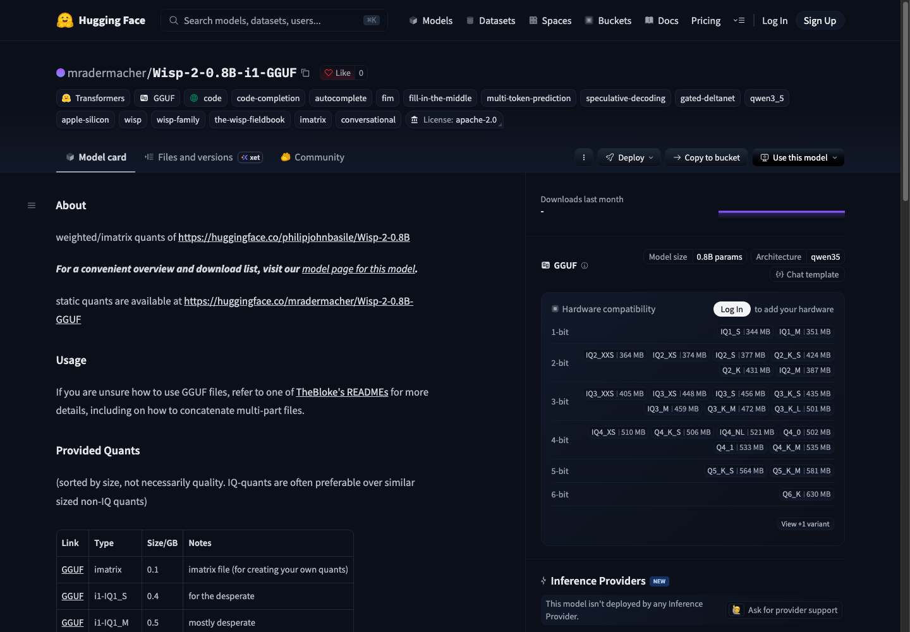
mradermacher转换记录与Wisp原作者模型卡
Wisp代码补全新增小体积转换版
来源: mradermacher转换记录与Wisp原作者模型卡 · 2026-11-25 · 原文链接
mradermacher于24日新增Wisp-2-0.8B的imatrix GGUF转换，i1-Q4_K_M文件约0.53GB。原模型由Philip John Basile基于Qwen3.5-0.8B-Base独立微调，面向代码中间填空与编辑器补全，不是阿里当天新出的基础模型。原作者公布的27.5毫秒热启动按键延迟来自M5 Max上的MLX八位与专门解码路径；本次四位GGUF没有相同条件下的速度或质量复测，不能直接继承那个成绩。
Janet 锐评：
光标旁的一小段补全，值得用小模型认真做。半个多GB的文件让尝试成本更低，但运行库、缓存和解码方式都影响手感；模型卡上的毫秒数，换一条执行路径就要重新计时。
OpenAI原始研究披露与Onava合作实验
GPT蛋白设计测出35个结合样本
来源: OpenAI原始研究披露与Onava合作实验 · 2026-11-25 · 原文链接
OpenAI于24日公布蛋白设计预印本及Onava实验结果。研究让预发布GPT-6.2以推理和通用代码设计小蛋白骨架，再由专门模型提供序列并筛选候选；送检322个小蛋白后，35个显示与目标结合，约10.9%，五种靶点各有至少一个命中。另有序列重设计实验，不能与该组命中率混算。计算测试中的最新内部模型在多项任务上表现较强，但完整蛋白折叠预测仍明显落后专用模型。该工作没有证明零样本、端到端脱离专门模型即可制成有效药物，结合信号也不是治疗效果。
Janet 锐评：
322个样本里有35个结合信号，已经比屏幕上的漂亮结构多了一层真实材料。但实验采用了专门模型筛选，模型能画出骨架、研究团队能做出结合样本，以及药物能帮助病人，分别需要不同证据。这次结果值得继续验证，恰恰因为它给出了可以追问的分母和流程；拿掉这些条件，反而会把科学进展写成一个过大的承诺。
OpenAI新案例报道（观测与搜索较早）
Codex搜星找到候选，仍待证实
来源: OpenAI新案例报道（观测与搜索较早） · 2026-11-25 · 原文链接
OpenAI于24日新报道两项由爱好者开展的天文搜索，分析使用的是较早公开的望远镜数据。Kevin Bond借助Codex检查约10万颗恒星的Kepler观测，筛出200多个信号，其中包括10颗已确认行星；一位SETI Institute天文学家独立检索到了其中两个相同信号。Ethan Byrd借助Astra分析约1900万颗恒星，首轮得到49个候选，并将一个较强候选提交TESS研究人员继续分析。两项工作都没有确认发现新行星：双星、仪器温度变化等也能造成亮度下降，后续观测与验证可能需要数月乃至数年。
Janet 锐评：
老数据里还有没有被漏过的东西，是个很适合把好奇心交给工具放大的问题。独立搜索碰到相同信号，会增加继续观察的理由，却不能替代下一次观测。这里最动人的进展，是爱好者递出了专业人员愿意接着检验的线索；故事停在“候选”两个字上，已经足够完整，不必提前为宇宙宣布一颗新行星。
Google DeepMind原始评测公告
HFE开测544道基础题的可靠性
来源: Google DeepMind原始评测公告 · 2026-11-25 · 原文链接
Google DeepMind于24日推出Humanity’s First Exam评测与Kaggle征题活动。数据集包含544道文字和图像基础题，覆盖20项基本能力，重点检查模型能否在重复作答及问题的细微变体中持续答对，而不只检查一道难题偶尔能否解出。官方称过去六个月前沿模型有所进步，未在这篇公告中公布一个可通用于所有任务的可靠率。社区可在12月15日前提交模型仍会答错的日常问题；榜单会更新，不能将当时名次视作永久能力排序。
Janet 锐评：
把第三个字母的颜色按顺序列出来，对人可能很轻松，却足以让复杂系统露出不稳定的一角。基础题不该因为缺少传奇感就从评测里消失：读错一格表单的代价，也可能比解不出奥数题更直接。544道题当然装不下生活，但反复答、换一种问法再答，比只挑最好的一次截图，更接近日常使用会遇到的要求。
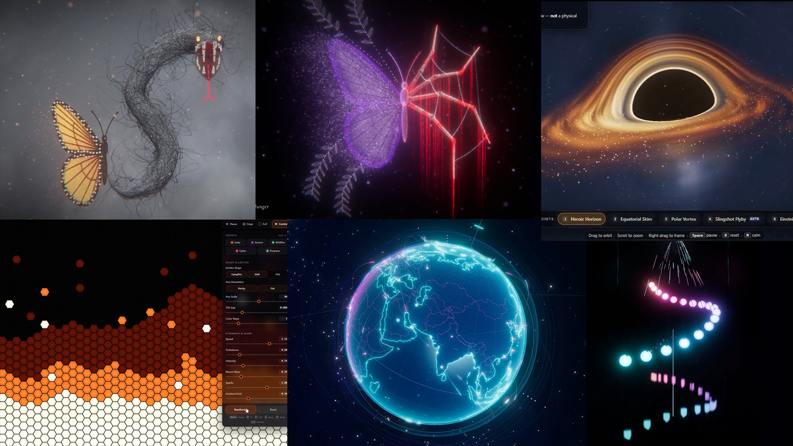
Google新案例汇编（模型此前已发布）
五位开发者用Neon制作交互三维作品
来源: Google新案例汇编（模型此前已发布） · 2026-11-25 · 原文链接
Google于24日新介绍五位开发者使用Gemini 4 Neon制作的项目：发光地球、Three.js蝴蝶、六边形火焰着色器、可调整视角与透镜参数的黑洞，以及摆球波动模拟。基础模型在此前已发布，这次是新案例展示；其中不足五分钟完成着色器的说法来自展示案例，不是受控开发效率测试。公告说明API入口采用付费层，Antigravity等入口有订阅条件；单个成品也不能证明换任意需求都可一次生成成功。
Janet 锐评：
这类展示对创作者最好的用处，是把一个可修改的起点摆在眼前：改一个镜头、拉一条滑杆，继续做自己的东西。五分钟是某个案例的时间，维护成本和返工次数还留在镜头之外。
投资与商业
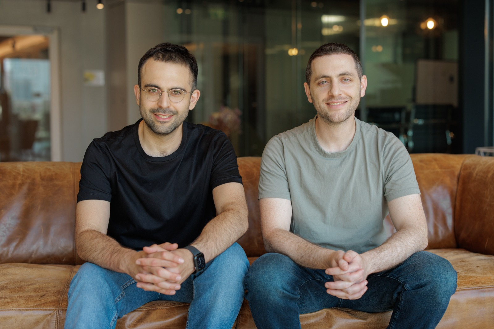
Zipher创始人原始融资公告
Zipher融资5300万美元，涵盖两轮
来源: Zipher创始人原始融资公告 · 2026-11-25 · 原文链接
Zipher创始人Dan Coster于24日宣布，公司结束隐身阶段，已从TLV Partners、Maor Investments与Glilot Capital获得种子轮和A轮合计5300万美元；公告没有将其拆成一笔新的5300万美元A轮，也没有披露估值。平台接收客户代码、服务目标和预算，再为数据工作负载选择引擎、硬件、框架与执行时间，并在运行前后采取调整动作。公司称企业客户取得40%至60%的成本效率改善，Hertz在具名证言中称不同负载的计算成本降低25%至40%；两者口径不同，均不能当作独立审计后的普遍保证。
Janet 锐评：
当代理可以不断生成数据任务，真正持续扣钱的地方可能是运行它们的机器。这家公司试图连同执行位置和时间一起优化，商业对象相当具体。5300万美元覆盖两轮，客户证言也只覆盖各自的负载；把这些范围保留下来，读者才看得清资金买的是一套正在运行的调度能力，以及哪些收益还需要自己的账单来验证。
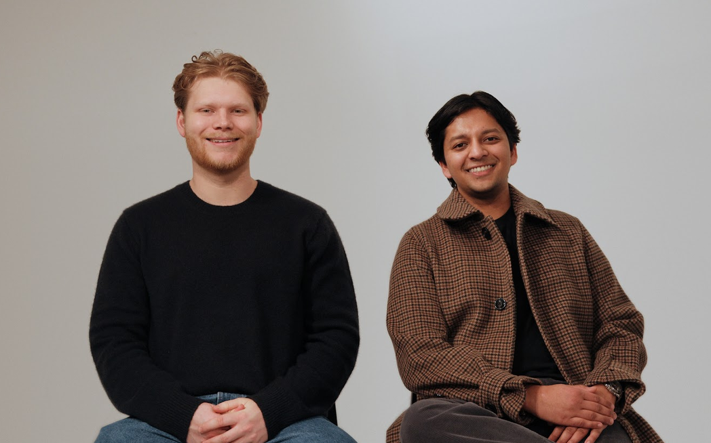
SiliconANGLE原创采访报道
Verra融资500万美元整理咨询经验
来源: SiliconANGLE原创采访报道 · 2026-11-25 · 原文链接
SiliconANGLE于24日原创报道，Verra获得Kearny Jackson领投的500万美元种子融资，参与方包括a16z Speedrun、Petra等。公司在咨询机构自己的云环境中索引既有交付物，将方法整理为代理可用的技能，并在Word、PowerPoint和Excel生成带来源的初稿。创始人称部分任务可由通常约80小时缩至十小时以内，这是公司在采访中的效果口径，没有统一独立对照实验；“带来源的初稿”仍需要咨询团队核对，不能直接等同于已完成客户交付。
Janet 锐评：
一家咨询公司最昂贵的失忆，是明明做过类似项目，下一位分析师却找不到。旧方案能被重新找到、原始单元格能被追到，都是有形的改进；至于十小时后的文件值不值得发给客户，仍是那家公司的专业责任。
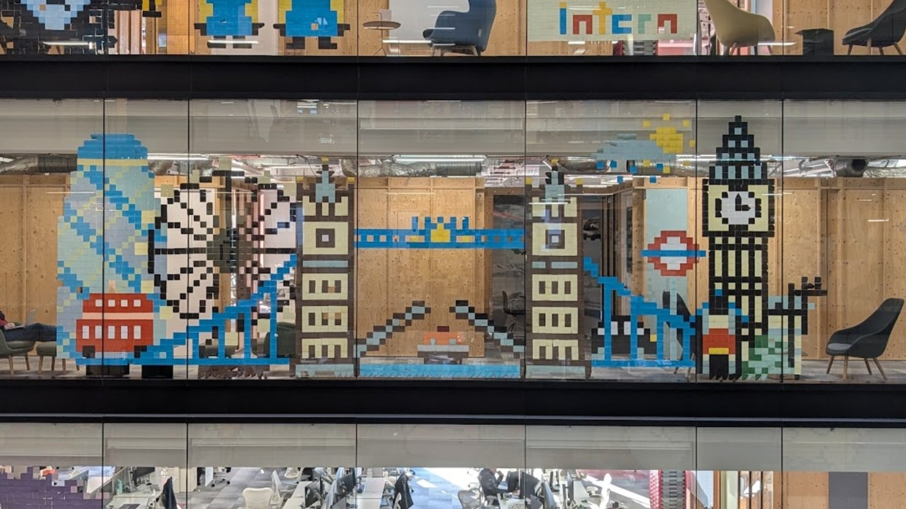
Google英国团队原始投资公告
Google计划买入伦敦新办公楼
来源: Google英国团队原始投资公告 · 2026-11-25 · 原文链接
Google于24日宣布计划购买伦敦国王十字地区6 Pancras Square，作为其伦敦AI开发园区的一部分，与Central Saint Giles及Platform 37等办公地点配合。公告说这些办公室将容纳参与Gemini、搜索与YouTube开发的数千名员工，但没有公布此次楼宇交易价格或新增岗位数量。文中提及的50亿英镑英国投资是既有背景，不能写成本次购楼金额；“计划购买”也不能提前写成交易已交割。
Janet 锐评：
模型与代理最终仍由一群在具体城市生活的人建造。一栋办公楼说明公司愿意把团队留在哪里，却没有自动给出多招多少人、增加多少产能的答案；这里最该保留的是“计划”这个时间状态。